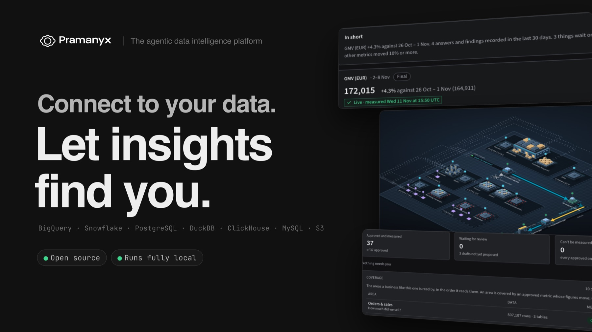

Unclear problem in.
Working system out.
More than a decade of turning ambiguous business questions into the data models, shared definitions and tooling that organisations make their decisions on. Now building Pramanyx, an open-source agentic data intelligence platform.
One person, four jobs.
Click a card to see what that means.
Five principles I work by.
One owner, from the question to the answer.
I do not hand a problem over at the edge of my role. I take it from the first vague question through the definition, the model and the report someone finally acts on, because the gaps between owners are where most work quietly fails.
How I run analytics across several commercial domains today.
Systems that hold without me in the room.
An answer helps once. A shared definition, an automated report or a team that can answer its own questions keeps helping. I judge my work by what still runs when I am no longer the one running it.
A company-wide data dictionary, automated reporting, data literacy programmes.
A definition holds only when everyone has agreed to it.
Most of what matters in data sits between teams, where nobody is in charge. I do not get there by mandate. I get there by making the shared definition clearer and more useful than each team's private one.
One set of numbers shared by Product, Sales and Finance.
Accountable for the direction, still writing the SQL.
As a Senior Data Manager I answer for where the work is going, not only for whether it is delivered. I cannot make a sound call on a trade-off I do not understand, so I stay hands-on in the queries, the models and the architecture discussions, and I build my own platform across the full stack.
I have answered for a P&L of my own.
As a founder there was no job description and no one to hand a decision to. I learned to decide on the evidence available, commit to it, and change course when the facts change.
Six stops, and what each taught me.
An answer should be checkable, not just believable.
I am building the platform I wanted for a decade: one that explores the data on its own and cites the evidence behind every finding.
A number has to mean the same thing everywhere it appears.
Here I learned to own the whole cycle, from definition to decision, and to build teams that can answer their own questions.
Trust in a report is earned upstream.
Working across several enterprise clients, I saw that people believe a dashboard only once the data feeding it has been put right.
Decisions are only as good as the definitions under them.
Reporting across many teams taught me to get agreement on what is being measured before measuring it.
Margin and stock stop being report categories when they are yours.
Running my own apparel business is where I learned how commercial decisions are really made: with my own pricing, suppliers and working capital.
Fix the cause, not the report.
My first years taught me that a problem which keeps recurring downstream almost always starts upstream.
Pramanyx
An Agentic Data Intelligence platform that explores your warehouse on its own and shows the evidence behind every number.
- Explores a connected warehouse unprompted and learns how the business works.
- Proposes metrics into a governed semantic layer, where a person reviews and approves them.
- Every figure cites its query, and deterministic checks run on each one before it is shown.
I built it after a decade spent on the same three problems: slow answers, inconsistent definitions, and analysis that never reaches the people who need it.

What I bring.
AI
LLM and agent orchestration · Harness engineering · Natural-language question answering over warehouse data · Anomaly detection
Governance
Data Dictionary and catalog · Data quality frameworks · Lineage and ownership · Master data standards · Root-cause analysis
Leading
Team management and mentoring · Analytics roadmap ownership · Stakeholder and executive communication · Agile (Scrum, Kanban)
Analytics
Attribution modelling · Customer segmentation · Dimensional and semantic modelling · KPI definition · Funnel and retention analysis · A/B testing
Data stack
Advanced SQL · ELT pipeline design · Transformation as code · Workflow orchestration · Lakehouse and warehouse architecture · Python automation
BI and reporting
Tableau · Power BI · Apache Superset · Looker · Executive dashboard design · Self-service enablement
What holds my attention.
Applied AI across industries
How the same methods take a different shape in retail, aviation or manufacturing. Pramanyx ships draft ontology maps for ten industries.
Agentic frameworks
What makes an agent dependable: the harness around the model, the guards on its output, and the record of what it did.
Agentic data intelligence
Analysis that begins before anyone asks, and that can be verified instead of taken on trust.
Modern data structures
Lakehouses, semantic layers and ontologies: shaping data so that people and agents read it the same way.
Give me the problem
nobody has defined yet.
Scratch the strip to get my email.
Landed directly here? Get to know me first ↑